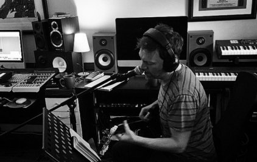
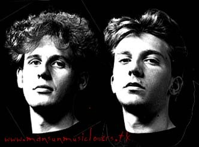
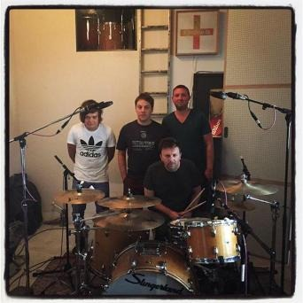

Inside Draposound StudioPaul Draper live studio session (indexpic.jpg).
RECOVERED FROM GALLERY.HTML, DRAPERPICS.HTML, CULT OF POSITIVITY & DRAPERLINKS.HTML
Studio and press photography, the 1999 Reading Festival fan shot catalog, Design Confederacy artwork, Cult of Positivity fanzine issues 1–3, and the original Mansun web directory.






.:Paul Draper 2007 Studio & Candid Series (Courtesy of Suzi & Dominique):
drapernew123.jpg · drapernew1234.jpg · drapernew1235.jpg · draper_new66.jpg · newpaul5.jpg · paulnew238.jpg · paulnew07_1.jpg · draper_new65.jpg · draper_new20.jpg · paulnew09.jpg · paulnew08.jpg · paul new 235.jpg · draper_new64.jpg · paul new 237.jpg.
.:1999 Reading Festival & Backstage Fan Shots (`draper_pics/`):
paul2.jpg · paul_signing.jpg · paul2_signing.jpg · paul_backstage.jpg · paul_chad2_99.jpg · paul_toungue.jpg · paul_hat.jpg · paul_eyes.jpg · paul_smirk.jpg · paul2_reading99.jpg · paul_reading99.jpg · paul_shades_reading99.jpg.
.:Design Confederacy Artwork Series (`draper_art/` by Joseph Salerno):
paul_draper_1.jpg through paul_draper_6.jpg.
Preserved in the pauldraper-music.co.uk scan vault:
cop (2)a.jpg – cop (18)a.jpgcoppg1a.jpg – coppg10a.jpgCOP3 (1)a.jpg – COP3 (14)a.jpgpaulbabblea.jpg, paulbabble2a.jpg & chadbabblea.jpg.Community & Fan Sites Linked on PaulDraper-Music.co.uk:
MansunMusicLovers (Yahoo! Group, founded 15 Dec 2001) · PaulDraper.tk / PD-Music Forum · Desperate Icons (Japan — sound.jp/mansun) · Inverse Midas (Russia — mansun.narod.ru) · Sci-Fi Hi-Fi (website.lineone.net/~mansun) · Mansun Heaven FTP · Mansunfreak (Czechia) · Draper Fansite Japan · Archived Official Mansun Websites (1997 natts.com/mansun & 2000 mansun.co.uk).